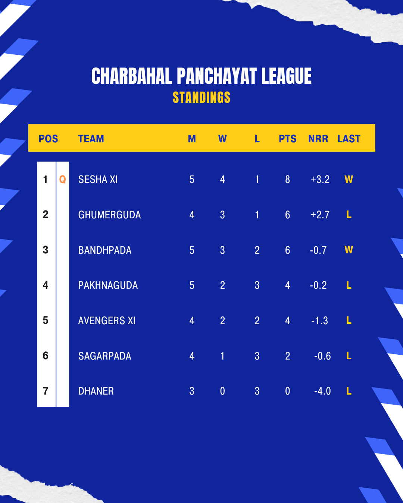

CHARBAHAL PREMIER LEAGUE
POINTS TABLE

The Charbahal Premier League (CPL) is an exciting cricket league known for its competitive spirit and thrilling matches. Founded in 2020, CPL has quickly become a cornerstone of cricketing excellence in Charbahal. Teams from across the region compete in a series of matches that culminate in an exhilarating final, showcasing top-notch cricketing talent and sportsmanship. CPL not only fosters a love for the game but also promotes community engagement and sports development. Stay tuned for updates, match schedules, and team standings throughout the CPL season.
HISTORY
The Charbahal Premier League (CPL) was established in 2020 with the vision of promoting cricket excellence and fostering community spirit in the region of Charbahal. What began as a grassroots initiative soon blossomed into a highly anticipated annual cricketing event, attracting teams and players from across Charbahal Panchayat. In its inaugural season, CPL started with 8 teams vying for glory in a format that combined intense competition with a celebration of cricketing talent. The league quickly gained popularity among both players and fans, drawing large crowds to its matches held at the iconic High school plaground, Kotniapada. Over the years, CPL has evolved into a premier cricketing extravaganza known for its competitive edge and thrilling encounters. Each season showcases the finest cricketing skills as teams battle it out for the prestigious CPL trophy. The league has not only provided a platform for emerging talents but has also united communities through the shared passion for cricket. Beyond the boundary ropes, CPL has contributed significantly to the development of sports infrastructure and the nurturing of young cricketers in Charbahal. It continues to uphold its commitment to promoting sportsmanship, teamwork, and fair play among participants. As CPL enters its 2ND season, it stands as a testament to the enduring love for cricket in Charbahal and remains a highlight of the sporting calendar for enthusiasts and supporters alike.
ORGANIZERS
Organizing Team: Avengers XI Avengers XI is not just a cricket team; it represents a passionate group of individuals dedicated to organizing and managing cricketing events with precision and enthusiasm. Founded on the principles of teamwork and sportsmanship, the organizing team of Avengers XI ensures that every aspect of their cricketing endeavors is meticulously planned and executed. Led by Nagesh Kar, who brings 5 years of experience in cricket management, the Avengers XI organizing team comprises seasoned professionals and avid cricket enthusiasts. Together, they oversee the seamless coordination of match schedules, venue arrangements, player registrations, and fan engagement activities. The team's commitment extends beyond logistical excellence. They strive to create an inclusive and enjoyable experience for players and spectators alike, fostering a vibrant cricketing culture within the community. From promoting fair play to encouraging youth participation in the sport, Avengers XI embodies the spirit of cricket as a unifying force. As Avengers XI continues to grow and evolve, the organizing team remains dedicated to upholding the highest standards of sportsmanship and organizational integrity. Their passion for cricket and community shines through in every match, making Avengers XI a beacon of sporting excellence and camaraderie.
GALLERY
PICTURE ARE YET TO BE POSTED